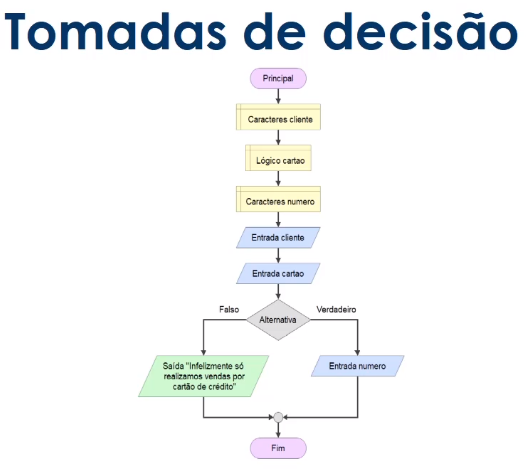

São expressões que utilizam operadores aritméticos e funções aritméticas envolvendo constantes e variáveis
Ex.: 50+50
total+50
| Soma | + |
| Subtração | - |
| Multiplicação | * |
| Divisão | / |
| Potenciação | ^ |
| Módulo | % |
São expressões com constantes e/ou variáveis que tem como resultado valores literais. Iremos utilizar as expressões literais nas atribuição de valor para uma variável ou constante.
Ex.: nome="José da Silva"
nome<-"José da Silva"
media=(nota1+nota2+nota3+nota4)/4
| Variáveis | Comando de atribuição/operação | Procedimento |
|---|---|---|
| a | a=2 | Armazena o valor 2 na variável a |
| b | b=a+3 | somar o valor de a(2) com 3 e armazenar em b(5) |
| c | c=a+b | Somar o valor de a(2) e o valor de b(5) e armazenar em c(7) |
São expressões compostas por outras expressões ou variáveis numéricas com operadores relacionais. As expressões relacionais retornam valores lógicos (verdadeiro/falso)
| Símbolo | Nome do Operador | Exemplo | Significado |
|---|---|---|---|
| > | Maior que | x > y | x é maior que y? |
| >= | Maior ou igual | x >= y | x é maior ou igual a y? |
| < | Menor que | x < y | x é menor que y? |
| <= | Menor ou igual | x <= y | x é menor ou igual a y? |
| == | Igualdade | x == y | x é igual a y? |
| != | Diferente de | x != y | x é diferente de y? |
Quando escrevemos programas, geralmente ocorre a necessidade de decidir o que fazer dependendo de alguma condição encontrada durante a execução.
